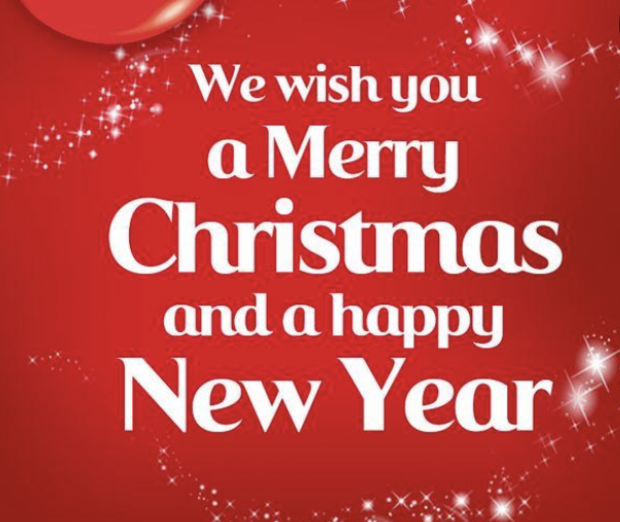
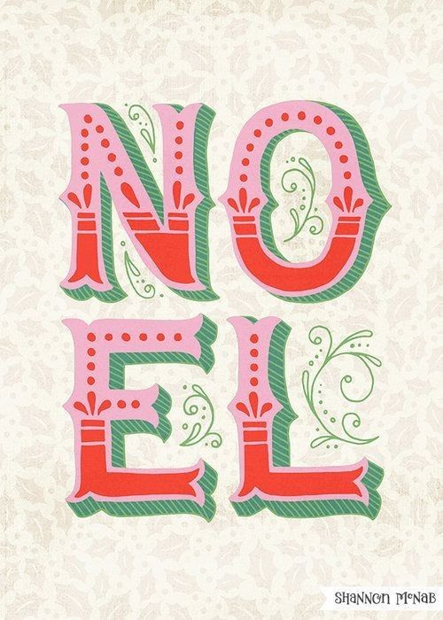
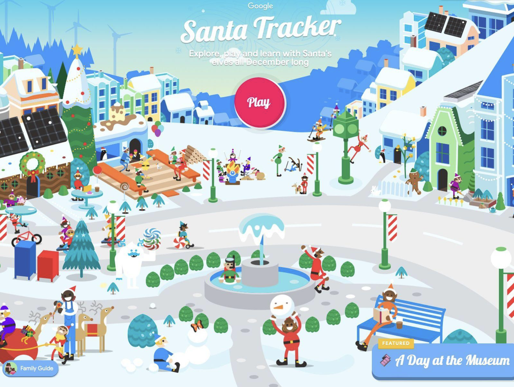
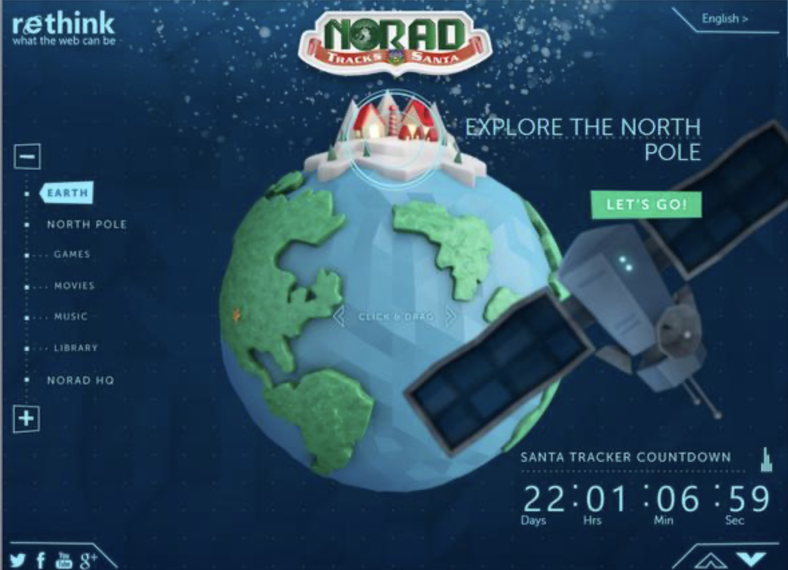

01. Coca-Cola
Coca-Cola uses recognizable holiday branding and festive lettering. Its Christmas designs are a good example of how typography can create a familiar holiday feeling.
Visit Coca-ColaDESIGN PROJECT ONE · CHRISTMAS DESIGN
Christmas typography uses decorative lettering, playful fonts, and festive colors to create excitement and holiday spirit through design.

Festive fonts
Holiday colors
Playful lettering
Creative layouts
THE BACKGROUND
Typography is the style and appearance of printed letters and words. It is an important part of graphic design because it helps communicate messages and create different feelings. Christmas typography uses lettering to bring out the excitement and warmth of the holiday season.
Holiday lettering often includes decorative fonts, handwritten styles, bold lettering, and playful arrangements. Designers commonly use colors such as red, green, white, and gold to make their designs feel connected to Christmas. Some designs also include stars, snowflakes, ornaments, and other holiday decorations.
Christmas typography can be seen on holiday advertisements, greeting cards, wrapping paper, posters, product packaging, and websites. Designers use different font sizes and styles to make certain words stand out. Large lettering can grab attention, while smaller lettering provides additional information. This makes typography an important part of creating a recognizable holiday design.
DESIGN INSPIRATION
These three websites are examples of holiday branding and design that can be studied for Christmas typography inspiration.

Coca-Cola uses recognizable holiday branding and festive lettering. Its Christmas designs are a good example of how typography can create a familiar holiday feeling.
Visit Coca-Cola
Google Santa Tracker uses playful lettering and colorful holiday graphics. Its design shows how typography can make a website feel fun and welcoming.
Visit Google Santa Tracker
NORAD Tracks Santa uses Christmas-themed graphics and lettering to create a festive experience. It is an example of holiday design used to make information engaging.
Visit NORAD Tracks SantaMY DESIGN DEMONSTRATION
My design uses the Mountains of Christmas typeface to create a festive and playful appearance. I chose red, green, and cream colors because they are commonly connected to the Christmas season. The large lettering is meant to grab attention and make the design feel cheerful.
IT'S THE MOST WONDERFUL TIME OF THE YEAR
A LITTLE HOLIDAY MAGIC
My original Christmas typography design using Mountains of Christmas.
FINAL THOUGHTS
Christmas typography works well when a designer wants to create a fun, welcoming, and festive feeling. Decorative fonts and bright holiday colors can make advertisements, greeting cards, websites, and packaging more interesting. Large lettering can also help important words stand out and communicate the holiday theme quickly.
However, Christmas typography does not work as well when there are too many decorative fonts or colors competing for attention. Some holiday fonts can be difficult to read, especially when used for long paragraphs or small text. Designers should balance decorative lettering with simple, readable text so the message is still easy to understand.